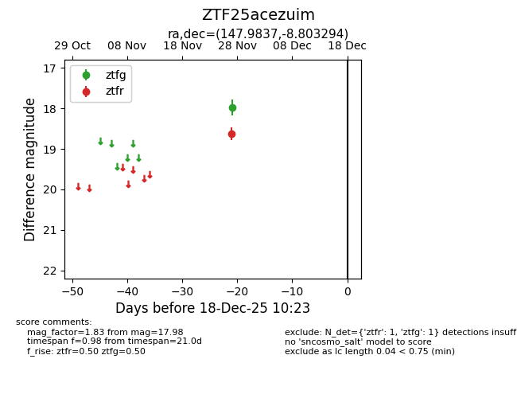
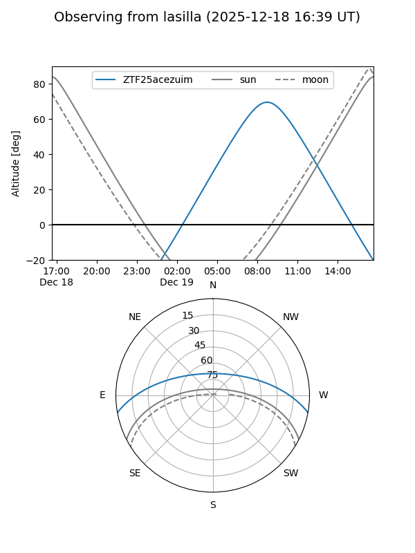

ZTF25acezuim
Target ZTF25acezuim at 2025-12-18 11:17
Aliases and brokers:
FINK: fink-portal.org/ZTF25acezuim
Lasair: lasair-ztf.lsst.ac.uk/objects/ZTF25acezuim
ALeRCE: alerce.online/object/ZTF25acezuim
alt names
ZTF25acezuim (ztf,fink_ztf)
Coordinates:
equatorial (ra, dec) = 147.9837,-8.80329
equatorial (HMS+DMS) = 09:51:56.08,-08:48:11.86
galactic (l, b) = (246.0889,+33.60501)
Photometry
last ztfg=17.98, ztfr=18.63
1 ztfg, 1 ztfr detections
Lightcurve

Visibility


Additional plots